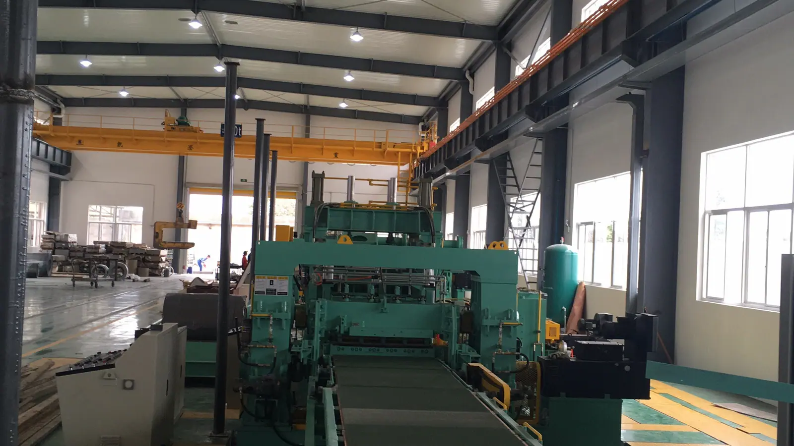

대만의 자동화 시스템 통합 업체, 이제 호찌민시에서
Charger Mechatronic(甲子機電)은 2005년부터 제조업을 위한 자동 제어 시스템을 설계, 제작, 설치, 시운전해 왔습니다. CMV는 그룹의 베트남 법인으로, 계약과 세금계산서 발행, 엔지니어 파견을 호찌민시에서 수행합니다.
CMV는 NUSCO(일본)의 베트남 독점 공식 대리점입니다.
사업 분야
- 자동 제어 시스템
- 고압·저압 배전반, 제어함, MCC반
- 금속 절단 라인 전기 제어
- 현장 엔지니어링 서비스
- 미쓰비시 발전기 공인 대리점
- AI 에너지 관리
- 철강·제지 가공 기계 대리점
제품 소개
모든 모델의 사양을 검색하고 복사할 수 있는 텍스트로 제공합니다.


라인별 응용
귀사의 라인을 선택하면 공급 범위와 견적에 필요한 자료를 볼 수 있습니다.


로터리 시어 개조
±0.3±0.1mm
대표적인 개조 사례: 절단 길이 공차가 ±0.3 mm 초과에서 ±0.1 mm 이내로 줄고 생산량이 20% 이상 증가했습니다. 상태가 양호한 기계부는 그대로 둡니다.
2014년까지 Charger Mechatronic은 플라잉 시어 서보 시스템을 200세트 판매했습니다.

CMV에 문의
업무 시간: 월요일–금요일(베트남 시간). 베트남어, 중국어, 영어로 상담 가능합니다.